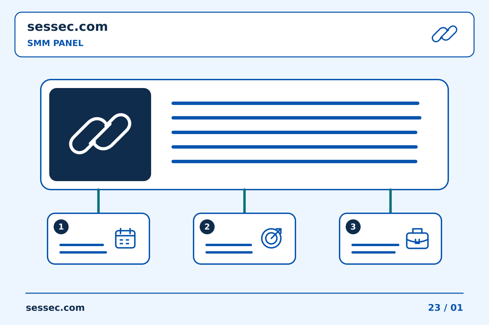
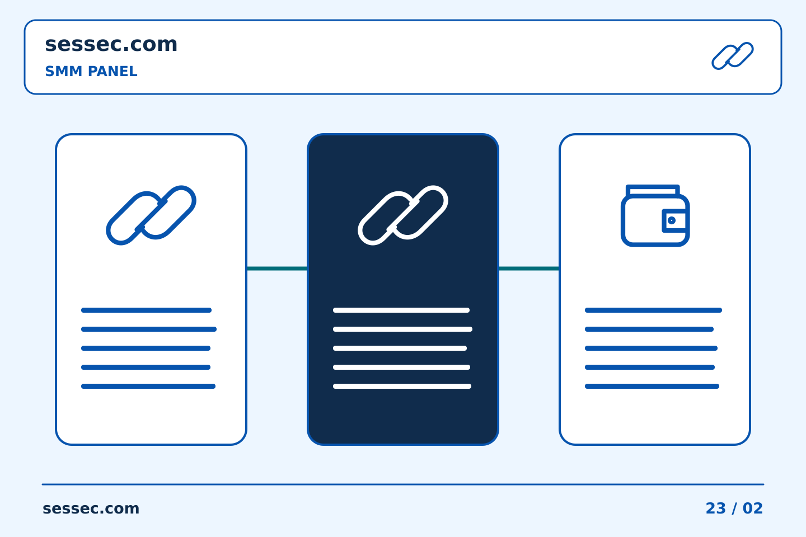
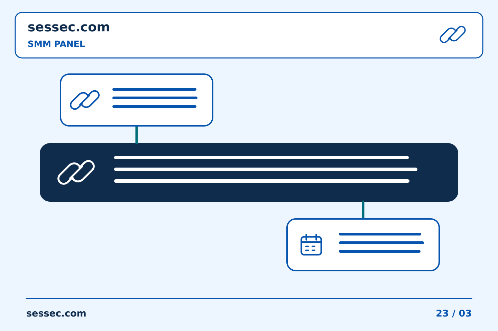

31/10/2026 00:01
រៀបចំការប្រមូតផេកឱ្យច្បាស់លាស់: ការរួមបញ្ចូល SMM Panel៖ ចងក្រងឯកសារការសម្រេចចិត្តជំនួសដោយដៃ | Sessec

កំណត់ត្រាយុទ្ធនាការច្បាស់លាស់ជួយម្ចាស់ផេកសម្រេចថាអ្វីគួរធ្វើម្ដងទៀត និងអ្វីគួរកែប្រែ។ ចាប់ផ្ដើមពីសារ ក្រុមអ្នកទស្សនាគោលដៅ និងការងារជាក់លាក់មួយ។ ប្រសិនបើ SMM Panel ជាផ្នែកមួយនៃផែនការ សូមកត់ត្រាតួនាទីរបស់វា ដោយកុំច្រឡំចំនួនសេវាជាមួយការចាប់អារម្មណ៍ពិតលើអាជីវកម្ម។ រក្សាគោលដៅ លក្ខខណ្ឌសេវា និងការសម្រេចចិត្តចំណាយមុនបញ្ជូនការបញ្ជាទិញ។ បន្ទាប់មកប្រៀបធៀបការបញ្ជូនដែលបានកត់ត្រាជាមួយការសាកសួរពិត និងមតិលើមាតិកា។ មគ្គុទ្ទេសក៍នេះពន្យល់ពីការភ្ជាប់ការជ្រើសរើសសេវា កំណត់ត្រាបញ្ជាទិញ និងសំណួរទៅកាន់ផ្នែកគាំទ្រទៅក្នុងដំណើរការប្រមូត។ កំណត់ត្រាច្បាស់លាស់ក៏ជួយសមាជិកក្រុមផ្សេងយល់ការងារដោយមិនចាំបាច់ស្មាន។ នៅពេលភស្តុតាងមិនគ្រប់គ្រាន់ សូមបញ្ជាក់ភាពមិនច្បាស់នោះ និងសួរសំណួរជាក់លាក់មុនសម្រេចទិញម្ដងទៀត។
មាតិកា
- ផ្ដល់ហេតុផលឱ្យមនុស្សតាមដាន មិនមែនបង្ហាញតែចំនួន
- រៀបចំមាតិកាបន្តបន្ទាប់ ដែលផ្ដល់ហេតុផលឱ្យគេត្រឡប់មកវិញ
- កំណត់តួនាទីរបស់សេវា SMM Panel ឱ្យច្បាស់
- វាស់ការឆ្លើយតបមានប្រយោជន៍ ហើយជ្រើសអ្វីត្រូវកែលម្អបន្ទាប់
- ការរួមបញ្ចូល SMM Panel៖ ចងក្រងឯកសារការសម្រេចចិត្តជំនួសដោយដៃ
- ការរក្សាសេចក្តីយោងការឆ្លើយតប API សម្រាប់ភារកិច្ច SMM Panel
- ប្រវត្តិ SMM Panel៖ ពិនិត្យមើលលទ្ធផលស្វែងរកដែលត្រូវគ្នាដោយប្រុងប្រយ័ត្ន
- ចំណាំការរួមបញ្ចូល SMM Panel៖ ការប្រៀបធៀបពេលវេលាព្រឹត្តិការណ៍ដោយប្រុងប្រយ័ត្ន
- ថត SMM Panel៖ ធ្វើឱ្យការចុះឈ្មោះការបញ្ជាទិញមានភាពងាយស្រួលក្នុងការស្វែងរក
- សេចក្តីសង្ខេបនៃ SMM Panel៖ ការដោះស្រាយកិច្ចការដោយគ្មានលេខសម្គាល់ការបញ្ជាទិញដែលបានកត់ត្រា
- ការដាក់ស្លាកអេក្រង់ SMM Panel ដូច្នេះពួកវានៅតែមានប្រយោជន៍នៅពេលក្រោយ
- ការយល់ដឹងអំពីការដាក់ស្នើមិនច្បាស់លាស់
- ការកែតម្រូវកំណត់ចំណាំ SMM Panel ខាងក្នុងដោយមិនបាត់បង់ប្រវត្តិ
- កំណត់ត្រាការរួមបញ្ចូល SMM Panel៖ បំបែកសំណើពីការបញ្ជាទិញដែលទទួលយក
- ថតភស្តុតាង SMM Panel៖ លុបច្បាប់ចម្លងដែលច្រឡំ
- ការរួមបញ្ចូល SMM Panel៖ ការផ្គូផ្គងស្លាកភារកិច្ចជាមួយសេចក្តីយោងលំដាប់
- ចំណាំការប្រៀបធៀប SMM Panel៖ ហេតុអ្វីបានជាកាលបរិច្ឆេទពិនិត្យមានសារៈសំខាន់
- ការងារជាក្រុម SMM Panel៖ ត្រឡប់ឯកសារយោងដែលបានទទួលយកទៅអ្នកស្នើសុំ
- សំណួរដែលគេសួរញឹកញាប់
ផ្ដល់ហេតុផលឱ្យមនុស្សតាមដាន មិនមែនបង្ហាញតែចំនួន
ចាប់ផ្ដើមដោយសរសេរមួយប្រយោគថាផេកជួយអ្នកណា និងដោះស្រាយបញ្ហាអ្វី។ អ្នកចូលមើលគួរមើលឃើញគោលបំណងនេះក្នុងការណែនាំផេក និងប្រកាសសំខាន់។ បង្ហាញព័ត៌មានមានប្រយោជន៍មុនសុំឱ្យគេចុចតាមដាន ដូចជាការបង្ហាញរបៀបប្រើផលិតផល ចម្លើយចំពោះសំណួរញឹកញាប់ ឬការប្រៀបធៀបច្បាស់លាស់។ ដាក់ព័ត៌មានទំនាក់ទំនង និងជំហានបន្ទាប់ឱ្យងាយរក។ ចំនួនដែលបង្ហាញធំជាងមុនមិនអាចជំនួសការរៀបចំនេះបានទេ ហើយមិនគួរយកវាមកអះអាងថាអតិថិជនពេញចិត្ត ឬណែនាំម៉ាកដោយឯករាជ្យនោះដែរ។
រៀបចំមាតិកាបន្តបន្ទាប់ ដែលផ្ដល់ហេតុផលឱ្យគេត្រឡប់មកវិញ
ចាត់ទុកការប្រមូតជាការចាប់ផ្ដើមនៃមាតិកាបន្ត មិនមែនជាចំណុចបញ្ចប់របស់ប្រកាសមួយទេ។ ឧទាហរណ៍ អ្នកអាចរៀបចំប្រកាសពន្យល់បញ្ហា វីដេអូបង្ហាញវិធីដោះស្រាយ និងប្រកាសបន្ទាប់ឆ្លើយសំណួរពិត។ នេះគ្រាន់តែជាគំរូផែនការ មិនមែនជារូបមន្តធានាកំណើនទេ។ ឱ្យចំណងជើងត្រូវនឹងអ្វីដែលមាតិកាបង្ហាញ និងស្នើសកម្មភាពពាក់ព័ន្ធតែមួយជាមុន។ ពិនិត្យថាអ្នកមិនស្គាល់អាជីវកម្មក៏អាចយល់សារបានឬអត់។ កំណត់ល្បឿនបង្ហោះដែលក្រុមការងារអាចធ្វើបាន ព្រមទាំងនៅមានពេលឆ្លើយសំណួរអតិថិជន។
កំណត់តួនាទីរបស់សេវា SMM Panel ឱ្យច្បាស់
ពិនិត្យបញ្ជីសេវាបច្ចុប្បន្ន មុនសន្មតថាវេបសាយមានសេវាសម្រាប់វេទិកា ក្រុមអ្នកទស្សនា ឬលទ្ធផលជាក់លាក់។ អានប្រភេទតំណដែលទទួល ការពិពណ៌នាសេវា កម្រិតបរិមាណ និងចំណាយសរុប។ បើសេវាពាក់ព័ន្ធនឹងការទិញការចូលរួម កុំហៅចំនួនដែលសេវាបញ្ជូនថាជាចំណាប់អារម្មណ៍ធម្មជាតិ ឬតម្រូវការអតិថិជនដែលបានផ្ទៀងផ្ទាត់។ ពិនិត្យច្បាប់របស់វេទិកា និងជ្រើសវិធីប្រមូតដែលស្របលក្ខខណ្ឌ។ ទុកថវិកាសម្រាប់ផលិតមាតិកា និងថែទាំអតិថិជនដាច់ដោយឡែក។ អត្រាថោកមិនមានន័យថាការប្រមូតមានប្រយោជន៍ជាងឡើយ ហើយការទិញបន្ថែមមិនអាចជំនួសការកែលម្អប្រកាសដែលមិនច្បាស់បានទេ។
វាស់ការឆ្លើយតបមានប្រយោជន៍ ហើយជ្រើសអ្វីត្រូវកែលម្អបន្ទាប់
កត់ស្ថានភាពមុនចាប់ផ្ដើម និងកំណត់រយៈពេលត្រួតពិនិត្យជាមុន។ ពិនិត្យព័ត៌មានអ្នកទស្សនាដែលមាន សំណួរស្ម័គ្រចិត្ត ការសាកសួរ និងកំណត់ត្រាអាជីវកម្មដាច់ដោយឡែក មិនមែនបញ្ចូលទាំងអស់ជាការអះអាងជោគជ័យតែមួយទេ។ ប្រៀបធៀបមាតិកាដែលមានលក្ខណៈស្រដៀង និងកត់ការផ្លាស់ប្ដូរផ្សេង ដូចជាពាណិជ្ជកម្ម ការផ្ដល់ជូន ឬភាពញឹកញាប់នៃការបង្ហោះ។ ភាពខុសគ្នាក្រោយប្រមូតមិនបញ្ជាក់មូលហេតុដោយខ្លួនឯងទេ។ បើភស្តុតាងនៅមានកម្រិត ត្រូវនិយាយតាមការពិត។ ប្រើការពិនិត្យនេះដើម្បីកែលម្អប្រកាសបន្ទាប់មួយចំណុច ជំនួសឱ្យការបង្កើនការទិញដោយស្វ័យប្រវត្តិ។
ការរួមបញ្ចូល SMM Panel៖ ចងក្រងឯកសារការសម្រេចចិត្តជំនួសដោយដៃ
ប្រសិនបើសមាហរណកម្មមិនផ្តល់លទ្ធផលច្បាស់លាស់ សូមស៊ើបអង្កេតសំណើដែលមានស្រាប់ មុនពេលពិចារណាលើការដាក់ស្នើដោយដៃ។ កត់ត្រាកិច្ចការដើម ពេលវេលាដាក់ស្នើ និងឯកសារយោងដែលបានត្រឡប់មកវិញ។ ការឆ្លើយតបដោយស្វ័យប្រវត្តិដែលមិនច្បាស់លាស់មិនមែនជាភស្តុតាងដែលថាមិនមានការបញ្ជាទិញទេ។
យល់ព្រមលើការថយក្រោយណាមួយ បន្ទាប់ពីស្ថានភាពនៃសំណើពីមុនត្រូវបានយល់តាមរយៈដំណើរការដែលបានចងក្រងជាឯកសារ។ រក្សាទាំងព្រឹត្តិការណ៍សមាហរណកម្ម និងការសម្រេចចិត្តជាលទ្ធផលនៅក្នុងប្រវត្តិកិច្ចការ។ នេះការពារការចែកដៃគ្នារវាងឧបករណ៍ពីការលាក់ការទិញត្រួតគ្នាដែលមានសក្តានុពល។
ការរក្សាសេចក្តីយោងការឆ្លើយតប API សម្រាប់ភារកិច្ច SMM Panel
រក្សាឯកសារយោងកិច្ចការផ្ទៃក្នុង សេវាកម្មដែលបានជ្រើសរើស គោលដៅ បរិមាណ និងពេលវេលាដាក់ស្នើ។ រក្សាទុកព័ត៌មានសម្ងាត់តាមរយៈដំណើរការគ្រប់គ្រងសម្ងាត់ដែលត្រូវបានអនុម័តដោយការរួមបញ្ចូលគ្នាជាជាងចម្លងពួកវាទៅក្នុងកំណត់ហេតុ។ កំណត់ត្រាប្រតិបត្តិការគួរតែពន្យល់ការណែនាំដោយមិនបង្ហាញគន្លឹះ API ដល់អ្នកគ្រប់គ្នាដែលអាចអានរបាយការណ៍ជំនួយ។
នៅពេលដែលការឆ្លើយតបដែលបានចងក្រងជាឯកសាររួមបញ្ចូលសេចក្តីយោងការបញ្ជាទិញដែលបានទទួលយក សូមភ្ជាប់វាទៅនឹងកិច្ចការដើម។ ប្រសិនបើការឆ្លើយតបមិនច្បាស់លាស់ សូមស៊ើបអង្កេតតាមរយៈស្ថានភាពដែលបានចងក្រងជាឯកសារ ឬដំណើរការជំនួយ មុនពេលស្នើសុំម្តងទៀត។ កុំសន្មត់ថារាល់ API ផ្តល់វាលដូចគ្នាបេះបិទ ការដកស្ទួនដោយស្វ័យប្រវត្តិ ឬអាកប្បកិរិយាដូចគ្នាបន្ទាប់ពីអស់ពេល។
ប្រវត្តិ SMM Panel៖ ពិនិត្យមើលលទ្ធផលស្វែងរកដែលត្រូវគ្នាដោយប្រុងប្រយ័ត្ន
លទ្ធផលស្វែងរកដែលស្រដៀងនឹងកិច្ចការគឺជាបេក្ខជន មិនមែនជាភស្តុតាងភ្លាមៗនៃការប្រកួតនោះទេ។ ប្រៀបធៀបឯកសារយោង គោលដៅ បរិមាណ និងបរិបទពេលវេលាដែលទទួលយកបាន ស្លាកគម្រោងស្រដៀងគ្នាអាចបង្ហាញនៅលើការទិញជាច្រើន ជាពិសេសនៅពេលដែលក្រុមមួយធ្វើទ្រង់ទ្រាយយុទ្ធនាការម្តងទៀត។
នៅពេលដែលការប្រកួតត្រូវបានបញ្ជាក់ សូមប្រើកំណត់ត្រាពិតប្រាកដនោះសម្រាប់ការតាមដាន។ ប្រសិនបើភ័ស្តុតាងមិនតម្រឹម សូមបន្តស្វែងរក ឬសួររកបរិបទដែលបាត់ ជាជាងភ្ជាប់សំណួរទៅនឹងលទ្ធផលដែលមើលទៅជិតបំផុត។ ការកំណត់អត្តសញ្ញាណត្រឹមត្រូវកើតឡើងមុនពេលការពន្យល់អំពីស្ថានភាពនៃការបញ្ជាទិញ។
ចំណាំការរួមបញ្ចូល SMM Panel៖ ការប្រៀបធៀបពេលវេលាព្រឹត្តិការណ៍ដោយប្រុងប្រយ័ត្ន
ពេលវេលាកត់ត្រាខាងក្នុង និងពេលវេលាសង្កេតការបញ្ជាទិញអាចយោងទៅលើព្រឹត្តិការណ៍ផ្សេងៗ។ ដាក់ស្លាកអ្វីដែលត្រាពេលវេលានីមួយៗតំណាងឱ្យមុនពេលបង្កើតលំដាប់។ សំណើដែលកំពុងត្រូវបានកត់ត្រាមិនបង្កើតដោយខ្លួនឯងថាការទិញត្រូវបានទទួលយកនៅពេលនោះពិតប្រាកដនោះទេ។
ប្រើការឆ្លើយតបដែលបានចងក្រងជាឯកសារ និងឯកសារយោងដែលបានទទួលយក ដើម្បីភ្ជាប់ព្រឹត្តិការណ៍ដែលអាចធ្វើទៅបាន។ រក្សាទំនាក់ទំនងមិនច្បាស់លាស់ច្បាស់លាស់ ជំនួសឱ្យការបង្កើតបន្ទាត់ពេលវេលាដែលមើលទៅច្បាស់លាស់ពីការសន្មត់។ នេះគាំទ្រដល់ការដោះស្រាយបញ្ហាកាន់តែច្បាស់ និងកាត់បន្ថយឱកាសនៃគណនីដែលបំភាន់ដែលត្រូវបានប្រើ ដើម្បីបង្ហាញអំពីភាពត្រឹមត្រូវនៃការដាក់ស្នើមួយផ្សេងទៀត។
ថត SMM Panel៖ ធ្វើឱ្យការចុះឈ្មោះការបញ្ជាទិញមានភាពងាយស្រួលក្នុងការស្វែងរក
ថតគម្រោងអាចមានឯកសារច្នៃប្រឌិត សេចក្តីព្រាង និងរបាយការណ៍ ប៉ុន្តែសេចក្តីយោងការបញ្ជាទិញដែលបានទទួលយកគួរតែមានផ្ទះច្បាស់លាស់។ រក្សាការចុះឈ្មោះសាមញ្ញដែលភ្ជាប់កិច្ចការដែលបានអនុម័តនីមួយៗទៅនឹងគោលដៅ និងឯកសារយោងរបស់វា។ កុំរំពឹងថាអ្នកត្រួតពិនិត្យថ្មីដើម្បីកំណត់ទីតាំងទិញដោយបើករាល់រូបភាព ឬសារនាំចេញ។
ធ្វើបច្ចុប្បន្នភាពការចុះឈ្មោះនៅពេលដែលឯកសារយោងដែលបានទទួលយកមាន ហើយសម្គាល់ការបញ្ជូនដែលមិនច្បាស់លាស់ដោយស្មោះត្រង់។ រក្សាភស្តុតាងគាំទ្រនៅជិតដោយមិនលាយបញ្ចូលគ្នាទៅក្នុងកន្លែងយោង។ ទីតាំងដែលអាចព្យាករណ៍បានធ្វើឱ្យកិច្ចសហការកាន់តែងាយស្រួល ខណៈពេលដែលរក្សាភាពខុសគ្នារវាងគំនិតដែលបានគ្រោងទុក និងការបញ្ជាទិញជាក់ស្តែង។

សេចក្តីសង្ខេបនៃ SMM Panel៖ ការដោះស្រាយកិច្ចការដោយគ្មានលេខសម្គាល់ការបញ្ជាទិញដែលបានកត់ត្រា
កំណត់ចំណាំខាងក្នុងដែលនិយាយថាបានដាក់ស្នើគឺមិនពេញលេញទេប្រសិនបើវាខ្វះឯកសារយោងដែលទទួលយក។ ពិនិត្យមើលប្រវត្តិគណនីដែលមាន និងបរិបទនៃការដាក់ស្នើដើម មុនពេលធ្វើការសន្និដ្ឋានអំពីអ្វីដែលបានកើតឡើង។ កំណត់ត្រាដែលបាត់អាចជាគម្លាតនៃការកត់ត្រា ប៉ុន្តែវាក៏អាចបង្ហាញពីការឆ្លើយតបមិនច្បាស់លាស់ដែលនៅតែត្រូវការការស៊ើបអង្កេត។
ប្រសិនបើអ្នកកំណត់ទីតាំងដែលទទួលយកកំណត់ត្រាដែលត្រូវគ្នា សូមភ្ជាប់ឯកសារយោងរបស់វាបន្ទាប់ពីប្រៀបធៀបគោលដៅ និងបរិមាណប៉ុណ្ណោះ។ ប្រសិនបើភ័ស្តុតាងនៅតែមិនច្បាស់លាស់ សុំការបំភ្លឺជាជាងបង្កើតការជំនួស ដើម្បីសម្រួលឯកសារ។ រក្សាភាពមិនច្បាស់លាស់ដែលអាចមើលឃើញរហូតដល់កិច្ចការដើមត្រូវបានយល់។
ការដាក់ស្លាកអេក្រង់ SMM Panel ដូច្នេះពួកវានៅតែមានប្រយោជន៍នៅពេលក្រោយ
បន្ថែមពេលវេលាចាប់យក សេចក្តីយោងលំដាប់ដែលពាក់ព័ន្ធ និងព័ត៌មានលម្អិតដែលរូបភាពមានបំណងបង្ហាញ។ រូបថតអេក្រង់អាចមានជួរ ឬតួរលេខជាច្រើន ដូច្នេះសូមបញ្ជាក់ថាមួយណាសំខាន់។ លុបព័ត៌មានឯកជនដែលមិនពាក់ព័ន្ធ មុនពេលចែករំលែក ខណៈពេលដែលរក្សាឯកសារដើមឯកជន ដែលដំណើរការរក្សាការកត់ត្រារបស់ក្រុមអ្នកទាមទារវា។
កុំបង្ហាញការចាប់យកចាស់ជាភស្តុតាងនៃស្ថានភាពបច្ចុប្បន្នដោយមិនពិនិត្យម្តងទៀត។ ប្រសិនបើទិដ្ឋភាពពេលក្រោយមានភាពខុសប្លែកគ្នា សូមរក្សាទាំងត្រាពេលវេលារបស់ពួកគេ ហើយពន្យល់ពីការផ្លាស់ប្តូរ។ ចំណងជើងច្បាស់លាស់ជួយគាំទ្រ និងអ្នកត្រួតពិនិត្យផ្ទៃក្នុងឱ្យយល់ពីភស្តុតាង ដោយមិនចាំបាច់ទាយថាប្រតិបត្តិករចង់បន្លិចអ្វីនោះទេ។
ការយល់ដឹងអំពីការដាក់ស្នើមិនច្បាស់លាស់
នៅពេលដែលការឆ្លើយតបចំពោះការប៉ុនប៉ងទិញគឺមិនច្បាស់លាស់ សូមបំបែកការសង្កេតក្នុងតំបន់ចេញពីសំណួរទទួលយក។ ទំព័របិទ ការតភ្ជាប់ដែលរំខាន ឬបាត់កំណត់ត្រាខាងក្នុងប្រាប់អ្នកអំពីបទពិសោធន៍របស់ប្រតិបត្តិករ ប៉ុន្តែវាមិនបង្កើតដោយខ្លួនឯងនូវអ្វីដែលបន្ទះទទួលយកនោះទេ។ សរសេរសេវាកម្មដែលបានជ្រើសរើស គោលដៅ បរិមាណ និងពេលវេលាប្រហាក់ប្រហែល រួមជាមួយនឹងឯកសារយោងណាមួយដែលពិតជាត្រូវបានត្រឡប់មកវិញ។ កុំបង្កើតលេខសម្គាល់បញ្ជាទិញ ឬសម្គាល់កិច្ចការដែលអវត្តមានដោយគ្រាន់តែធ្វើឱ្យសន្លឹកកិច្ចការមើលទៅពេញលេញ។
ប្រើប្រវត្តិនៃការបញ្ជាទិញដែលមាន និងដំណើរការបញ្ជាក់ជាឯកសារ ដើម្បីរកមើលការប្រកួតដែលអាចទុកចិត្តបាន។ ប្រៀបធៀបវាលការណែនាំជាជាងជ្រើសរើសកំណត់ត្រាតែប៉ុណ្ណោះព្រោះវាបានបង្ហាញខ្លួននៅពេលនៅក្បែរនោះ។ ប្រសិនបើភ័ស្តុតាងនៅតែមិនច្បាស់លាស់ សូមរក្សាកិច្ចការដែលមើលឃើញដោយមិនបានដោះស្រាយ ហើយផ្តល់ឱ្យមនុស្សម្នាក់នូវការទទួលខុសត្រូវចំពោះសំណួរបន្ទាប់។ ប្រតិបត្តិករទីពីរគួរតែអាចមើលឃើញថាការទិញផ្សេងទៀតមិនត្រូវបានអនុញ្ញាតជាអ្នកជំនួសទេ។ ការសម្រេចចិត្តជាយថាហេតុណាមួយគួរតែរក្សាព្រឹត្តិការណ៍ដើម និងពន្យល់ពីភស្តុតាងថ្មីដែលបង្ហាញពីភាពត្រឹមត្រូវនៃសកម្មភាពបន្ទាប់។
ការកែតម្រូវកំណត់ចំណាំ SMM Panel ខាងក្នុងដោយមិនបាត់បង់ប្រវត្តិ
បែងចែកកំហុសនៅក្នុងកំណត់ត្រាផ្ទៃក្នុងពីកំហុសនៅក្នុងលំដាប់ដែលទទួលយក។ ការកែតម្រូវសៀវភៅបញ្ជីមិនផ្លាស់ប្តូរគោលដៅសេវាកម្មដែលបានដាក់ស្នើ ឬបរិមាណនោះទេ។ សូមពិនិត្យមើលកំណត់ត្រាបន្ទះជាមុនសិន ដើម្បីកុំឱ្យក្រុមជឿថាបញ្ហាប្រតិបត្តិការត្រូវបានជួសជុលដោយគ្រាន់តែស្លាកមួយត្រូវបានកែសម្រួល។
បន្ថែមកាលបរិច្ឆេទកែតម្រូវ និងការពន្យល់ខ្លីៗទៅក្នុងកំណត់ត្រាផែនការ។ សម្រាប់បញ្ហាការបញ្ជាទិញដែលបានដាក់ស្នើ សូមប្រើដំណើរការគាំទ្រដែលមាន ហើយរក្សាការឆ្លើយតបរបស់វាដោយឡែកពីគ្នា។ កំណត់ចំណាំចុងក្រោយគួរតែអនុញ្ញាតឱ្យអ្នកត្រួតពិនិត្យយល់ពីការណែនាំដើម កំហុសដែលបានរកឃើញ និងសកម្មភាពដែលត្រូវបានអនុវត្តជាក់ស្តែង។
កំណត់ត្រាការរួមបញ្ចូល SMM Panel៖ បំបែកសំណើពីការបញ្ជាទិញដែលទទួលយក
ប្រព័ន្ធខាងក្នុងអាចកត់ត្រាការព្យាយាមជាច្រើនដង ឬការត្រួតពិនិត្យស្ថានភាពជុំវិញកិច្ចការមួយ។ កុំរាប់រាល់ព្រឹត្តិការណ៍ដែលបានកត់ត្រាជាការបញ្ជាទិញដាច់ដោយឡែក។ ប្រើសេចក្តីយោងបន្ទះ និងអត្ថន័យនៃការឆ្លើយតបដែលបានចងក្រងជាឯកសារដើម្បីកំណត់ថាកំណត់ត្រាណាមួយតំណាងឱ្យការទិញ និងដែលតំណាងឱ្យការសង្កេត ឬសំណើដែលមិនទាន់បានដោះស្រាយ។
រក្សាទំនាក់ទំនងរវាងកិច្ចការផ្ទៃក្នុង និងឯកសារយោងដែលទទួលយកដោយមិនចាំបាច់បង្ហាញអត្តសញ្ញាណនៅក្នុងកំណត់ហេតុប្រចាំថ្ងៃ។ ប្រសិនបើការទទួលយកមិនប្រាកដប្រជា សូមស៊ើបអង្កេតតាមរយៈដំណើរការដែលបានចងក្រងជាឯកសារមុននឹងបញ្ជូនបន្ត។ វារក្សាសកម្មភាពប្រតិបតិ្តការរាប់ពីការប្រែក្លាយទៅជាគណនីបំភាន់នៃចំនួនការទិញដែលមាន។

ថតភស្តុតាង SMM Panel៖ លុបច្បាប់ចម្លងដែលច្រឡំ
ច្បាប់ចម្លងជាច្រើននៃរូបថតអេក្រង់មួយអាចមើលទៅដូចជាការសង្កេតដាច់ដោយឡែកជាច្រើន។ ដាក់ស្លាកសញ្ញាថតចម្លងដើម ហើយបែងចែកវាពីការចែករំលែក ឬច្រឹបច្បាប់ចម្លង។ រក្សាឯកសារយោងអំពីពេលវេលា និងការបញ្ជាទិញ ដូច្នេះអ្នកត្រួតពិនិត្យមិនសន្និដ្ឋានអំពីព្រឹត្តិការណ៍ច្រើនទេ ដោយគ្រាន់តែមកពីចំនួនឯកសាររូបភាពក្នុងថតមួយ។
ប្រើភស្តុតាងដែលពាក់ព័ន្ធនៅក្នុងសារគាំទ្រ និងរក្សាឯកសារដើមចាំបាច់ស្របតាមដំណើរការរបស់ក្រុមរបស់អ្នក។ ជៀសវាងការផ្ញើរាល់ច្បាប់ចម្លងដោយគ្មានការពន្យល់។ សំណុំភស្តុតាងដែលមានស្លាកសញ្ញាតូចជាង និងច្បាស់លាស់អាចធ្វើឱ្យសំណួរជាក់ស្តែងកាន់តែងាយស្រួលយល់ដោយមិនលាក់បាំងភាពខុសគ្នានៃសម្ភារៈរវាងការសង្កេតពិតប្រាកដ។
ការរួមបញ្ចូល SMM Panel៖ ការផ្គូផ្គងស្លាកភារកិច្ចជាមួយសេចក្តីយោងលំដាប់
ឧបករណ៍កំណត់អត្តសញ្ញាណការរួមបញ្ចូលខាងក្នុងប្រហែលជាពិបាកសម្រាប់អ្នកត្រួតពិនិត្យក្នុងការទទួលស្គាល់។ រក្សាស្លាកកិច្ចការដែលមនុស្សអាចអានបានខ្លីមួយនៅក្បែរវា ហើយរក្សាទុកឯកសារយោងដែលទទួលយកដោយបន្ទះដាច់ដោយឡែក។ ស្លាកគួរតែពន្យល់ពីគោលបំណងដោយមិនជំនួសអត្តសញ្ញាណពិតប្រាកដដែលត្រូវការដើម្បីស៊ើបអង្កេតសំណើ។
នៅពេលពិនិត្យមើលបញ្ហា សូមប្រៀបធៀបគោលដៅ បរិមាណ និងពេលវេលា ព្រមទាំងស្លាកសញ្ញា។ ឈ្មោះកិច្ចការស្រដៀងគ្នាមិនគួរបណ្តាលឱ្យការឆ្លើយតបមួយត្រូវបានផ្តល់ទៅឱ្យការទិញមួយផ្សេងទៀតទេ។ រក្សាលិខិតសម្គាល់នៅខាងក្រៅកំណត់ត្រារោគវិនិច្ឆ័យធម្មតា ហើយធ្វើតាមឯកសារជាក់ស្តែងសម្រាប់ការរួមបញ្ចូលដែលកំពុងប្រើប្រាស់។
ចំណាំការប្រៀបធៀប SMM Panel៖ ហេតុអ្វីបានជាកាលបរិច្ឆេទពិនិត្យមានសារៈសំខាន់
រក្សាកាលបរិច្ឆេទពិនិត្យឡើងវិញនៅក្បែរឯកសារយោងសេវាកម្ម លក្ខខណ្ឌដែលបានចែង និងការគិតថ្លៃប៉ាន់ស្មាន។ កំណត់ចំណាំដោយគ្មានកាលបរិច្ឆេទអាចមើលទៅដូចជាការណែនាំបច្ចុប្បន្នជាយូរបន្ទាប់ពីកិច្ចការដើមបានបញ្ចប់។ ប្រើការប្រៀបធៀបដែលបានរក្សាទុកដើម្បីយល់ពីហេតុផលពីអតីតកាល បន្ទាប់មកពិនិត្យមើលការចុះបញ្ជីបច្ចុប្បន្ន មុនពេលរៀបចំការទិញផ្សេងទៀត។
កំណត់អត្តសញ្ញាណការផ្លាស់ប្តូរដែលប៉ះពាល់ដល់គោលដៅដែលបានគ្រោងទុក បរិមាណ ឬប្រាក់ឧបត្ថម្ភ។ ធ្វើបច្ចុប្បន្នភាពកំណត់ត្រាការសម្រេចចិត្តជាមួយនឹងព័ត៌មានបច្ចុប្បន្ន ជាជាងការកែសម្រួលកំណត់ត្រាទិញចាស់ដោយស្ងៀមស្ងាត់។ នេះធ្វើឱ្យវាអាចពន្យល់បានទាំងការជ្រើសរើសមុន និងជម្រើសថ្មីដោយមិនធ្វើពុតថាគ្រប់លក្ខខណ្ឌនៃសេវាកម្មនៅដដែល។
ការងារជាក្រុម SMM Panel៖ ត្រឡប់ឯកសារយោងដែលបានទទួលយកទៅអ្នកស្នើសុំ
បន្ទាប់ពីការណែនាំដែលមានការអនុញ្ញាតត្រូវបានទទួលយក ត្រឡប់សេចក្ដីយោងរបស់វាទៅកាន់កំណត់ត្រាកិច្ចការដែលអ្នកស្នើសុំប្រើ។ កំណត់សម្គាល់ប្រតិបត្តិករឯកជនអាចនឹងមិនផ្តល់ឱ្យក្រុមដែលនៅសល់នូវភាពមើលឃើញគ្រប់គ្រាន់នោះទេ។ រួមបញ្ចូលស្លាកគោលដៅដែលពាក់ព័ន្ធ ដូច្នេះអ្នកទទួលអាចបែងចែកការទិញនេះពីការងារបើកចំហផ្សេងទៀត។
រាយការណ៍ការទទួលយកដាច់ដោយឡែកពីការសង្កេតលើការដឹកជញ្ជូននៅពេលក្រោយ។ ប្រសិនបើការឆ្លើយតបមិនច្បាស់លាស់ សូមបញ្ជាក់ថា ជំនួសឱ្យការផ្តល់ឯកសារយោងដែលបានទាយ។ សារត្រឡប់ច្បាស់លាស់បិទការប្រគល់ការបញ្ជូន ខណៈពេលដែលចាកចេញពីការពិនិត្យមើលស្ថានភាព និងសំណួរដែលមិនទាន់ដោះស្រាយបានភ្ជាប់ជាមួយកិច្ចការដូចគ្នា។
សំណួរដែលគេសួរញឹកញាប់
តើការណែនាំមួយណាដែលប្រតិបត្តិករគួរចាត់ទុកជាការអនុញ្ញាត?
ប្រើការណែនាំពេញលេញដែលត្រូវបានអនុម័តតាមរយៈដំណើរការដែលបានយល់ព្រមរបស់ក្រុម។ វាគួរតែកំណត់គោលដៅ សេវាកម្មដែលបានជ្រើសរើស បរិមាណ និងវិសាលភាពនៃការចំណាយ។ តំណដែលបានបញ្ជូនបន្ត ការទទួលស្គាល់ក្រៅផ្លូវការ ឬការផ្ដល់យោបល់ប្រកបដោយការច្នៃប្រឌិតអាចផ្តល់នូវបរិបទដោយមិនអនុញ្ញាតឱ្យទិញ។ នៅពេលដែលសារមានជម្លោះ ទទួលបានការសម្រេចចិត្តច្បាស់លាស់ពីអ្នកអនុម័តដែលមានទំនួលខុសត្រូវ មុនពេលបញ្ជូន។ រក្សាការសម្រេចចិត្តនោះភ្ជាប់ទៅនឹងឯកសារយោងដែលបានទទួលយក។
តើការឆ្លើយតបមិនច្បាស់លាស់គួរតែត្រូវបានធ្វើតាមដោយការទិញមួយផ្សេងទៀតភ្លាមៗទេ?
ការឆ្លើយតបមិនច្បាស់លាស់មិនបញ្ជាក់ថាសំណើដើមអវត្តមានទេ។ រក្សាបរិបទនៃការដាក់ស្នើដែលមិនសម្ងាត់ ហើយស៊ើបអង្កេតតាមរយៈប្រវត្តិការបញ្ជាទិញដែលមាន លំហូរការងារស្ថានភាពដែលបានចងក្រងជាឯកសារ ឬផ្លូវជំនួយ។ រក្សាកិច្ចការដែលមិនបានដោះស្រាយរហូតដល់ភស្តុតាងគាំទ្រការសម្រេចចិត្ត។ កុំប្រើការទិញជាលើកទីពីរដើម្បីធ្វើឱ្យឯកសារក្នុងស្រុកមើលទៅពេញលេញ។ វាអាចត្រួតលើការណែនាំដែលត្រូវបានទទួលយករួចហើយ។
តើមានអ្វីកើតឡើងនៅពេលដែលមាតិកាដែលបានអនុម័ត ឬបរិមាណផ្លាស់ប្តូរ?
ដំបូងកំណត់ថាតើការណែនាំនៅតែជាសេចក្តីព្រាង ឬត្រូវបានទទួលយករួចហើយ។ ពិនិត្យសេចក្តីព្រាងច្បាប់ប្រឆាំងនឹងតម្រូវការថ្មី និងទទួលបានការយល់ព្រមជាចាំបាច់។ សម្រាប់ការបញ្ជាទិញដែលមានស្រាប់ សូមរក្សាបរិបទដែលបានដាក់ស្នើ ហើយប្រើដំណើរការបញ្ជាក់ដែលអាចអនុវត្តបាន មុនពេលសន្យាថានឹងមានការកែប្រែ។ ការធ្វើបច្ចុប្បន្នភាពសន្លឹកកិច្ចការផ្ទៃក្នុងមិនមែនជាភស្តុតាងដែលថាប្រតិបត្តិការដែលបានទទួលយកបានផ្លាស់ប្តូរជាមួយវានោះទេ។
តើអ្វីជាកម្មសិទ្ធិនៅក្នុងសំណុំភស្តុតាងគាំទ្រដ៏មានប្រយោជន៍?
ចាប់ផ្តើមជាមួយនឹងសេចក្តីយោងលំដាប់ដែលពាក់ព័ន្ធ ស្ថានភាពដែលបានសង្កេត ពេលវេលាពិនិត្យ និងសំណួរច្បាស់លាស់។ បន្ថែមរូបភាព ឬសម្ភារៈផ្សេងទៀត លុះត្រាតែពួកគេជួយពន្យល់ពីបញ្ហានោះ។ ដាក់ស្លាកឯកសារភ្ជាប់នីមួយៗ ហើយលុបព័ត៌មានលម្អិតឯកជនដែលមិនពាក់ព័ន្ធចេញពីកំណែដែលបានចែករំលែក។ រក្សាការសង្កេតជាប្រវត្តិសាស្ត្រខុសពីបច្ចុប្បន្ន ហើយមិនត្រូវបញ្ចូលពាក្យសម្ងាត់ ឬសោ API នៅក្នុងកំណត់ត្រាកិច្ចការធម្មតា ឬសេចក្ដីសង្ខេបជំនួយទេ។
តើអ្វីទៅជាការប្រគល់មានប្រយោជន៍អប្បបរមាសម្រាប់កិច្ចការដែលមិនទាន់បានបញ្ចប់?
រួមបញ្ចូលកិច្ចការដែលបានអនុម័ត ឯកសារយោងដែលទទួលយកប្រសិនបើស្គាល់ ការសង្កេតចុងក្រោយ និងសំណួរដែលមិនទាន់មានចម្លើយ ឬសកម្មភាពបន្ទាប់។ ចាត់តាំងទំនាក់ទំនងដែលមានទំនួលខុសត្រូវ និងបែងចែកគំនិតដែលមិនបានដាក់ស្នើ ពីការបញ្ជូនដែលមិនច្បាស់លាស់។ ការប្រគល់ដ៏ល្អអនុញ្ញាតឱ្យប្រតិបត្តិករផ្សេងទៀតបន្តការងារដូចគ្នាដោយមិនចាំបាច់បង្កើតវាឡើងវិញ។ ការចូលប្រើគណនីគួរតែអនុវត្តតាមដំណើរការដែលមានការអនុញ្ញាតជាជាងការកែលម្អតាមរយៈលិខិតសម្គាល់ដែលបានចម្លងទៅក្នុងកំណត់ត្រា។
ពិនិត្យមើលសេវាកម្មបច្ចុប្បន្ន — Sessec · ទាក់ទងជំនួយ
អត្ថបទអប់រំខ្លះបានកែសម្រួលពីបណ្ណាល័យដែលមានស្រាប់។ ដ្យាក្រាមត្រូវបានបង្កើតថ្មីសម្រាប់វេបសាយ និងអត្ថបទនេះ ដោយប្រើធាតុរចនារួម។ រូបបង្ហាញគំនិត មិនមែនជារូបគណនីពិត ឬភស្តុតាងលទ្ធផលអតិថិជនទេ។